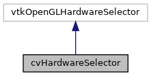

|
ACloudViewer
3.9.4
A Modern Library for 3D Data Processing
|
|
ACloudViewer
3.9.4
A Modern Library for 3D Data Processing
|
Hardware selector with ParaView-style buffer caching. More...
#include <cvHardwareSelector.h>


Public Member Functions | |
| vtkTypeMacro (cvHardwareSelector, vtkOpenGLHardwareSelector) | |
| void | PrintSelf (ostream &os, vtkIndent indent) override |
| virtual vtkSelection * | Select (int region[4]) |
| Perform selection over the specified region. More... | |
| vtkSelection * | PolygonSelect (int *polygonPoints, vtkIdType count) |
| Perform polygon selection. More... | |
| virtual bool | NeedToRenderForSelection () |
| Check if next Select() will need to render. More... | |
| void | InvalidateCachedSelection () |
| Invalidate the cached selection buffers. More... | |
| int | AssignUniqueId (vtkProp *prop) |
| Assign a unique ID to a prop. More... | |
| void | BeginRenderProp (vtkRenderWindow *rw) override |
| Begin render prop (sets ProcessID) More... | |
| void | BeginSelection () override |
| Begin selection - sets selector on renderer. More... | |
| void | EndSelection () override |
| End selection - clears selector from renderer. More... | |
| vtkSetMacro (PointPickingRadius, unsigned int) | |
| Point picking radius (in pixels) More... | |
| vtkGetMacro (PointPickingRadius, unsigned int) | |
Static Public Member Functions | |
| static cvHardwareSelector * | New () |
Protected Member Functions | |
| cvHardwareSelector () | |
| ~cvHardwareSelector () override | |
| int | GetPropID (int idx, vtkProp *prop) override |
| Return a unique ID for the prop. More... | |
| bool | PassRequired (int pass) override |
| Check if a pass is required. More... | |
| bool | PrepareSelect () |
| Prepare for selection. More... | |
| void | SavePixelBuffer (int passNo) override |
| Save pixel buffer (with optional debug output) More... | |
Protected Attributes | |
| vtkTimeStamp | CaptureTime |
| Time when buffers were last captured. More... | |
| int | UniqueId |
| Counter for unique prop IDs. More... | |
| unsigned int | PointPickingRadius |
| Point picking radius in pixels (default: 10) More... | |
Hardware selector with ParaView-style buffer caching.
vtkOpenGLHardwareSelector subclass with ParaView-style buffer caching
This class extends vtkOpenGLHardwareSelector to add logic for reusing captured buffers as much as possible, avoiding repeated selection-rendering.
Key features (from ParaView):
This class is adapted from ParaView's vtkPVHardwareSelector to provide optimized hardware selection with buffer caching. It avoids recapturing buffers unless needed, improving selection performance.
Reference: ParaView/Remoting/Views/vtkPVHardwareSelector.h
Definition at line 45 of file cvHardwareSelector.h.
|
protected |
Definition at line 46 of file cvHardwareSelector.cpp.
References PointPickingRadius, and UniqueId.
|
overrideprotected |
Definition at line 57 of file cvHardwareSelector.cpp.
| int cvHardwareSelector::AssignUniqueId | ( | vtkProp * | prop | ) |
Assign a unique ID to a prop.
Used for tracking props during selection. Reference: vtkPVHardwareSelector::AssignUniqueId()
| prop | The prop to assign an ID to |
Definition at line 162 of file cvHardwareSelector.cpp.
References UniqueId.
|
override |
Begin render prop (sets ProcessID)
Definition at line 207 of file cvHardwareSelector.cpp.
|
override |
Begin selection - sets selector on renderer.
Definition at line 198 of file cvHardwareSelector.cpp.
|
override |
End selection - clears selector from renderer.
Definition at line 204 of file cvHardwareSelector.cpp.
|
overrideprotected |
Return a unique ID for the prop.
Reference: vtkPVHardwareSelector::GetPropID()
Definition at line 171 of file cvHardwareSelector.cpp.
|
inline |
Invalidate the cached selection buffers.
Call this when the scene has changed and cached buffers are no longer valid. Reference: vtkPVHardwareSelector::InvalidateCachedSelection()
Definition at line 90 of file cvHardwareSelector.h.
|
virtual |
Check if next Select() will need to render.
Returns true when the next call to Select() will result in renders to capture the selection-buffers.
Reference: vtkPVHardwareSelector::NeedToRenderForSelection()
Definition at line 153 of file cvHardwareSelector.cpp.
References CaptureTime.
Referenced by PrepareSelect().
|
static |
|
overrideprotected |
Check if a pass is required.
Reference: vtkPVHardwareSelector::PassRequired()
Definition at line 60 of file cvHardwareSelector.cpp.
| vtkSelection * cvHardwareSelector::PolygonSelect | ( | int * | polygonPoints, |
| vtkIdType | count | ||
| ) |
Perform polygon selection.
Reference: vtkPVHardwareSelector::PolygonSelect()
| polygonPoints | Array of polygon points |
| count | Number of points |
Definition at line 143 of file cvHardwareSelector.cpp.
References count, and PrepareSelect().
|
protected |
Prepare for selection.
Captures buffers if needed. Reference: vtkPVHardwareSelector::PrepareSelect()
Definition at line 71 of file cvHardwareSelector.cpp.
References CaptureTime, CVLog::Error(), NeedToRenderForSelection(), origin, and size.
Referenced by PolygonSelect(), and Select().
|
override |
Definition at line 190 of file cvHardwareSelector.cpp.
References PointPickingRadius, and UniqueId.
|
overrideprotected |
Save pixel buffer (with optional debug output)
Definition at line 215 of file cvHardwareSelector.cpp.
|
virtual |
Perform selection over the specified region.
This method avoids clearing captured buffers if they are still valid. Reference: vtkPVHardwareSelector::Select()
| region | Selection region [x1, y1, x2, y2] |
Definition at line 101 of file cvHardwareSelector.cpp.
References CVLog::Error(), PointPickingRadius, and PrepareSelect().
| cvHardwareSelector::vtkGetMacro | ( | PointPickingRadius | , |
| unsigned int | |||
| ) |
| cvHardwareSelector::vtkSetMacro | ( | PointPickingRadius | , |
| unsigned int | |||
| ) |
Point picking radius (in pixels)
When selecting a single point and no hit is found at the exact pixel, search in this radius for nearby points.
Reference: vtkPVRenderViewSettings::GetPointPickingRadius()
| cvHardwareSelector::vtkTypeMacro | ( | cvHardwareSelector | , |
| vtkOpenGLHardwareSelector | |||
| ) |
|
protected |
Time when buffers were last captured.
Definition at line 168 of file cvHardwareSelector.h.
Referenced by NeedToRenderForSelection(), and PrepareSelect().
|
protected |
Point picking radius in pixels (default: 10)
Definition at line 174 of file cvHardwareSelector.h.
Referenced by cvHardwareSelector(), PrintSelf(), and Select().
|
protected |
Counter for unique prop IDs.
Definition at line 171 of file cvHardwareSelector.h.
Referenced by AssignUniqueId(), cvHardwareSelector(), and PrintSelf().